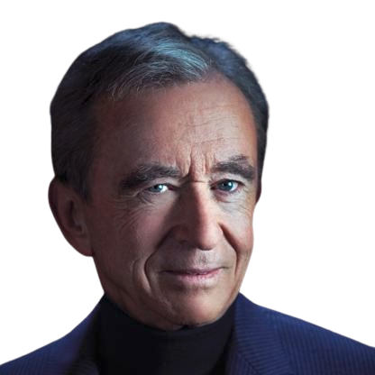
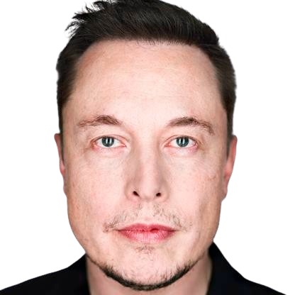
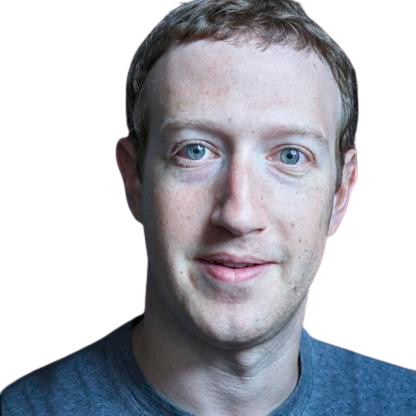
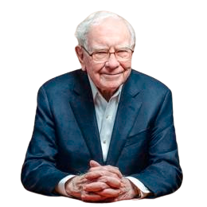
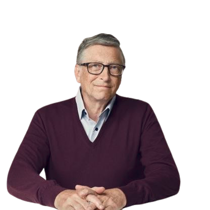

 Bernard Arnault, un titan al modei de lux, conduce conglomeratul renumit LVMH, alături de familia sa. În calitate de președinte și CEO, liderul său vizionar a modelat industria de lux globală. Cu o avere printre cele mai mari din lume, influența familiei Arnault se întinde în moda, artă și filantropie, epitomizând eleganța și inovația.
 Elon Musk este un vizionar antreprenor și inginer inovator, cunoscut pentru fondarea și conducerea companiilor precum SpaceX, Tesla și Neuralink. Cu viziunea sa asupra viitorului, el caută să transforme industria spațială, transportul electric și inteligența artificială. Prin ambiția sa și voința de a depăși limitele, Musk își propune să schimbe lumea.
 Mark Zuckerberg este un antreprenor și programator celebru, cunoscut mai ales pentru fondarea rețelei sociale Facebook. Viziunea sa a transformat modul în care oamenii interacționează și împărtășesc informații online. Prin inovație și adaptare, Zuckerberg a construit un imperiu digital, contribuind la revoluția comunicării și conectivității globale.
 Warren Buffett este un investitor legendă și filantrop, recunoscut pentru abordarea sa conservatoare și pentru strategia sa de investiții pe termen lung. Cunoscut ca "Oracolul din Omaha", el este președintele și CEO-ul Berkshire Hathaway. Expert în evaluarea companiilor și în gestionarea riscurilor, Buffett este o figură emblematică în lumea finanțelor, fiind respectat pentru abordarea sa pragmatică și pentru filozofia sa de investiții.
 Bill Gates este un pionier în industria tehnologiei, co-fondatorul Microsoft și un filantrop dedicat. El a contribuit la revoluționarea calculatoarelor personale, transformând Microsoft într-o putere globală în domeniul software-ului. Prin intermediul Fundației Bill și Melinda Gates, el lucrează la soluționarea problemelor de sănătate și educație la nivel mondial. Gates este recunoscut pentru viziunea sa asupra inovației și pentru generozitatea sa în filantropie.